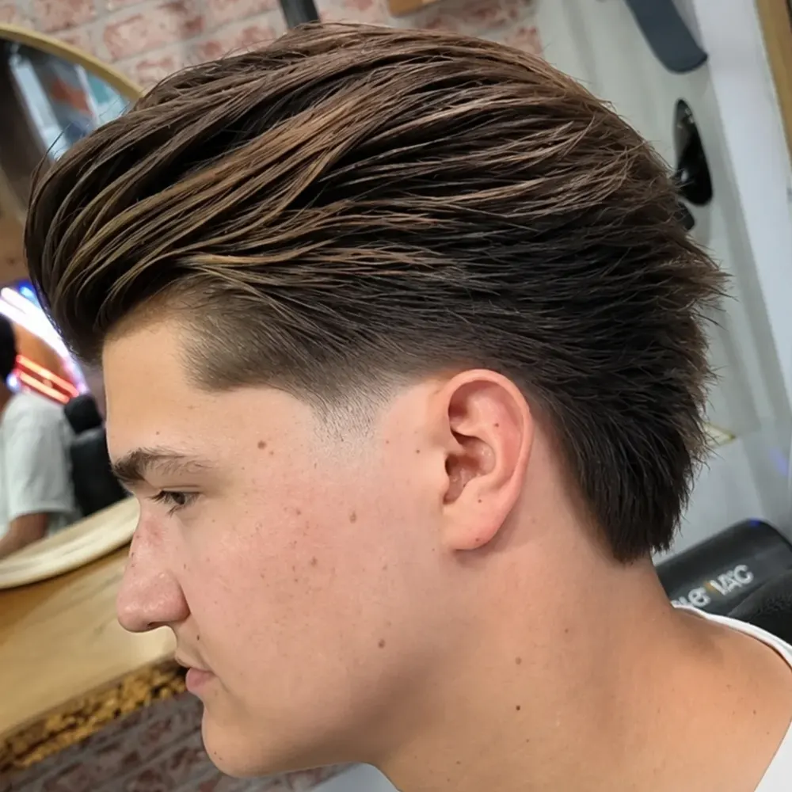
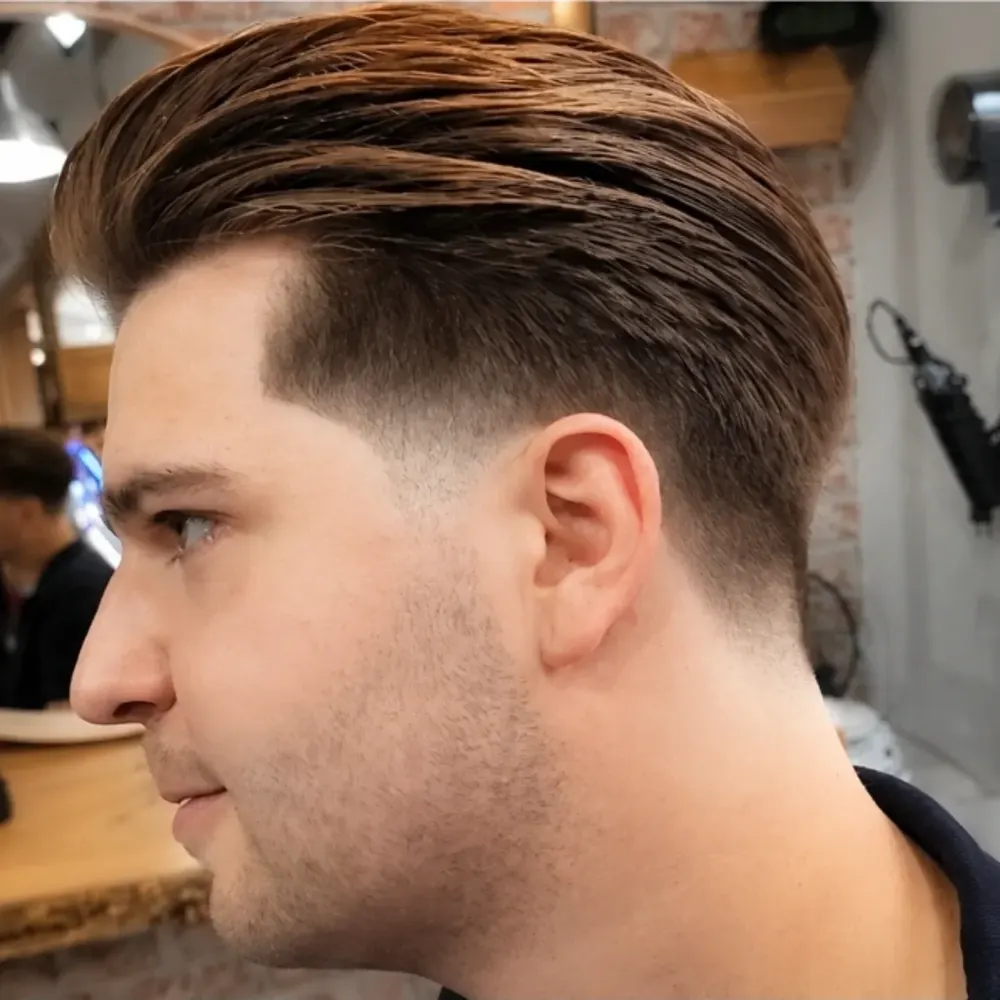
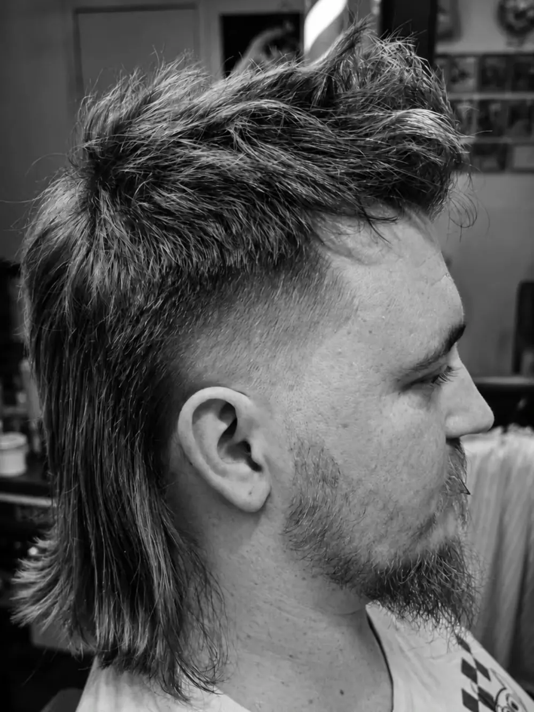
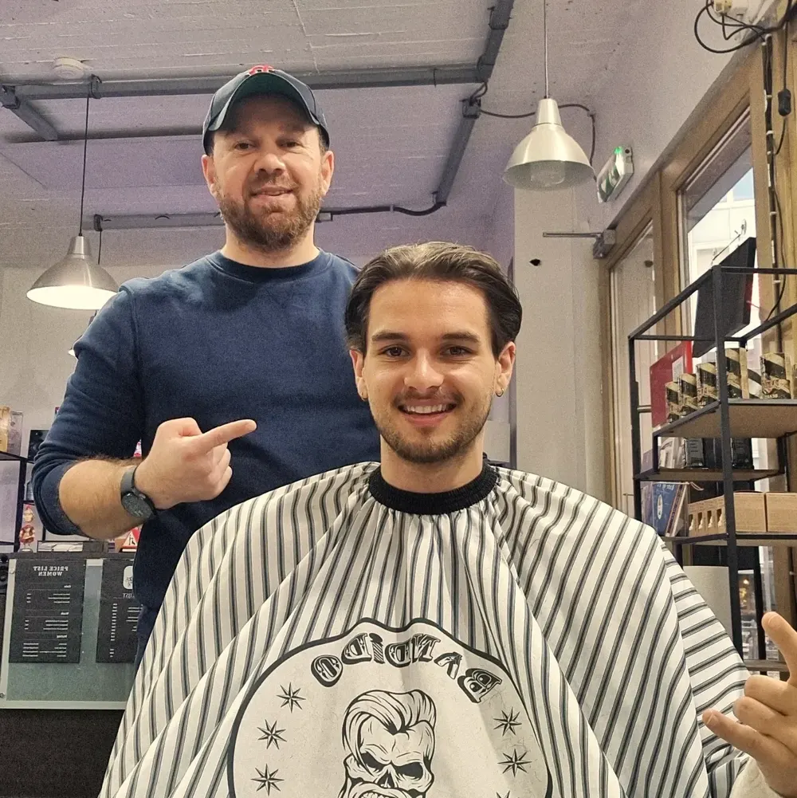
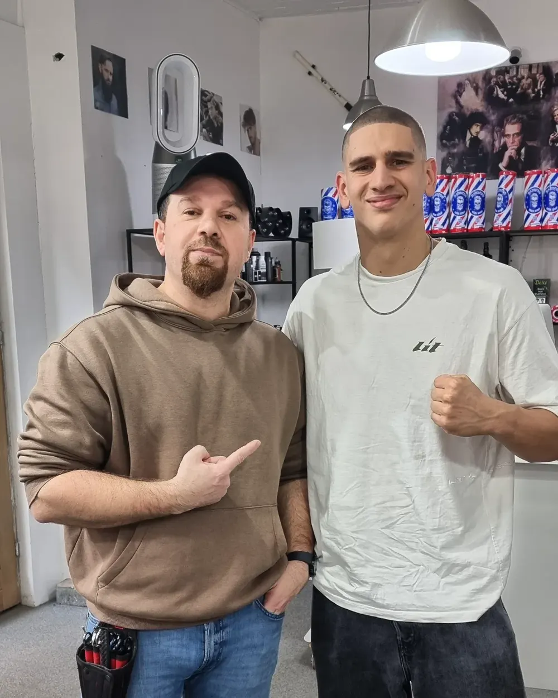
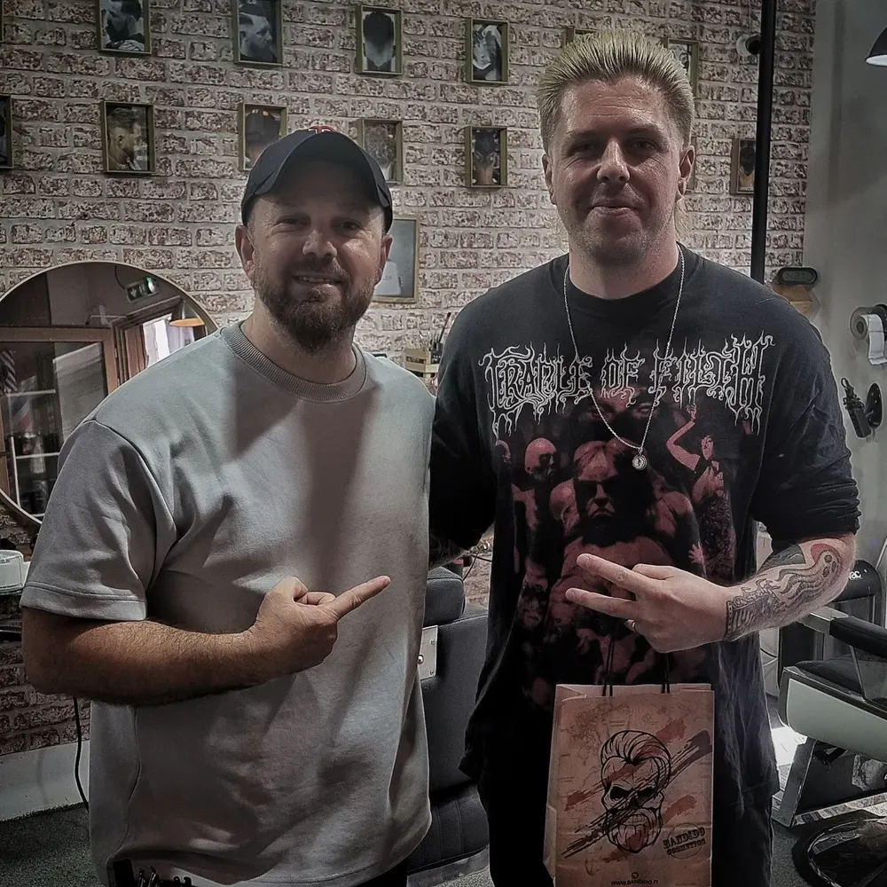
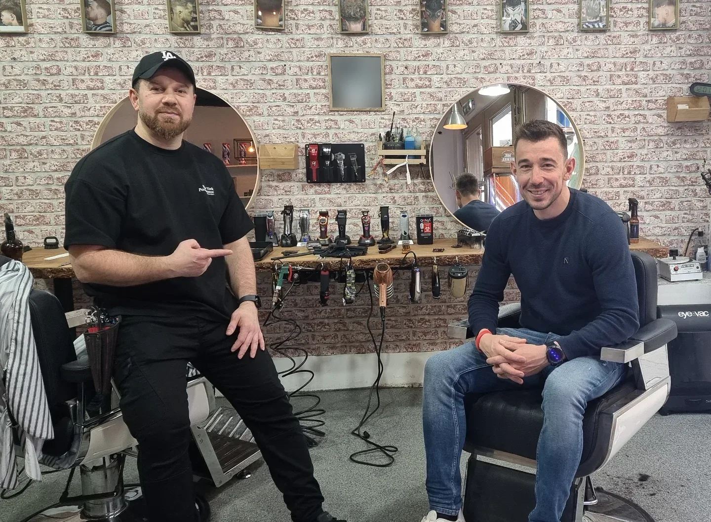

Laat het aan
een vakman
over.
Knippen, scheren of een hot towel shave met massage. Leo luistert eerst naar wat jij wil, en daarna gaat de schaar erin. Je stapt buiten met een snit die klopt.
NL · FR · ENLeo knipt in drie talen.
Van side part tot mullet.
Kort en strak, of lang met wat beweging erin. Leo vertrekt van wat jij in je hoofd hebt, en van wat je haar wil doen.




In de stoel.
Geen idee wat je wil? Neem gerust een foto mee of vertel het gewoon. Leo luistert.
Wie komt, blijft.
9 jaar vaste klantVaste klant voor 9 jaar, altijd goed, nooit iets slecht en aangename barber.Ronny DierckxGoogle
7 jaar vaste klantAl 7 jaar mijn vaste kapper! Kapper heeft voor mij de perfecte stijl, altijd netjes, proper en verzorgd! Toffe kerel om een sociaal babbeltje mee te hebben.Geert De la RuelleGoogle
VakmanLeo is gewoon een vakman door en door. Elke keer opnieuw vertrekt hij van wat jij wil, luistert hij goed en het resultaat is telkens opnieuw precies.John JohnGoogle
Klaar? Dan wijst Leo naar zijn werk.
Na elke knipbeurt volgt dezelfde foto: Leo naast de klant, vinger naar de nieuwe snit. Een vaste klant van jaren of iemand die voor het eerst binnenkomt, iedereen krijgt hem.







Schuif aan in de stoel.
Stuur Leo een berichtje met wat je wil en wanneer het je past. Hij antwoordt in het Nederlands, Frans of Engels.
Sparta Barber
Korte Nieuwstraat 3, 2000 Antwerpen
@sparta.barber op Instagram
- Maandag9u tot 17u
- Dinsdag9u tot 17u
- Woensdag9u tot 17u
- Donderdag9u tot 17u
- Vrijdag9u tot 19u
- Zaterdag9u tot 19u
- ZondagGesloten